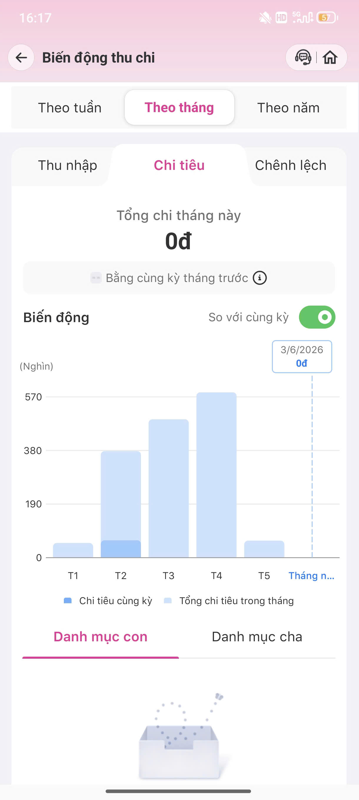

Phân tích AI feature · Promise vs Reality · 4 Paths · As-is / To-be
User được target

User xem báo cáo cuối tháng → Moni hiển thị breakdown đúng danh mục (ăn uống, tiện ích, mua sắm) → User thấy ngay tháng này chi ăn uống tăng 30% → Moni gợi ý giảm bớt order đồ ăn. Flow smooth, không cần action gì thêm.
✓ Xảy ra khi merchant mapping rõ ràng (Grab Food, Shopee Food)
Hiện tại: Không tồn tại. Moni không có cơ chế hỏi lại, không show options, không chuyển về human support. AI sẽ tự phân loại với confidence ảo — user không biết kết quả có đáng tin không.
User chỉ biết AI sai khi tự check lại transaction history hoặc khi báo cáo trông "vô lý". Không có indicator nào cho thấy phân loại này được AI tự động gán. User nhìn vào biểu đồ mà không biết data có đáng tin không.
User có thể sửa category thủ công. Nhưng correction không persist — cùng merchant, cùng pattern, lần sau vẫn về category cũ. Không có feedback loop. Không có thông báo "đã ghi nhận". Model không học từ correction của user.
Ba findings này sẽ đổi SPEC theo hướng: thêm low-confidence path vào chatbot flow (trigger khi intent score < 0.7), thêm correction persistence layer vào data model (merchant→category mapping per user ID), và thêm confidence UI component vào transaction list + báo cáo — bao gồm test case cho cả 3 states: high-confidence / low-confidence / user-corrected.